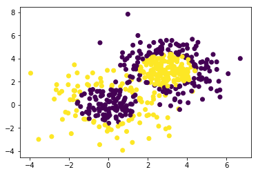
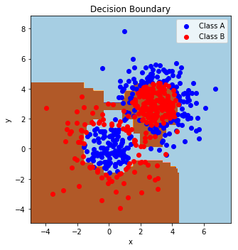

Tutorial - AdaBoost decision Surfaces
Posted on June 8, 2017
by Govind Gopakumar
Please find the associated IPython file here
AdaBoost tutorial
This is adapted from scikit learn docs here. All rights and credits belong to them! This will take you through what the decision surfaces look like when we use the general technique of boosting to learn a powerful classifier from a set of weak classifiers.
We will fit our data onto a group of Gaussians. We shall plot and see how it is not easy for a single weak classifier to predict properly the class disribution, but boosting enables us to learn the entire structure.
# Author: Noel Dawe <noel.dawe@gmail.com>
# Modified by : Govind Gopakumar <govindg@cse.iitk.ac.in>
# License: BSD 3 clause
# Let us import the basic libraries
import numpy as np
import matplotlib.pyplot as plt
# We shall import the different classifier libraries we will need!
from sklearn.ensemble import AdaBoostClassifier
from sklearn.tree import DecisionTreeClassifier
from sklearn.datasets import make_gaussian_quantiles# Construct dataset
X1, y1 = make_gaussian_quantiles(cov=2.,
n_samples=200, n_features=2,
n_classes=2, random_state=1)
X2, y2 = make_gaussian_quantiles(mean=(3, 3), cov=1.5,
n_samples=300, n_features=2,
n_classes=2, random_state=1)
# Concatenate the two constructed bits together
X = np.concatenate((X1, X2))
y = np.concatenate((y1, - y2 + 1))# Let's print the size of the training data set
print(X.shape)
print(y.shape)(500, 2)
(500,)# This plot should show us how our data can't be cleanly seperated
plt.scatter(X[:,0], X[:, 1], c=y)
plt.show()

Generated Image
In AdaBoost, we choose a “base classifier” to start boosting. We shall work with a Decision Tree classifier, but note that we can choose whatever we want.
# Create a small Adaboosted decision tree, this time with 2 trees
bdt_small = AdaBoostClassifier(DecisionTreeClassifier(max_depth=1),
algorithm="SAMME",
n_estimators=2)
# Create a larger Adaboosted decision tree, this time with 200 trees!
bdt_big = AdaBoostClassifier(DecisionTreeClassifier(max_depth=1),
algorithm="SAMME",
n_estimators=200)# Fit both the trees
bdt_small.fit(X, y)
bdt_big.fit(X, y)AdaBoostClassifier(algorithm='SAMME',
base_estimator=DecisionTreeClassifier(class_weight=None, criterion='gini', max_depth=1,
max_features=None, max_leaf_nodes=None,
min_impurity_split=1e-07, min_samples_leaf=1,
min_samples_split=2, min_weight_fraction_leaf=0.0,
presort=False, random_state=None, splitter='best'),
learning_rate=1.0, n_estimators=200, random_state=None)# Set this to bdt_small or bdt_big to see the different decision boundaries
bdt = bdt_big
# The rest of this is plotting code. You don't need to mess with this really
plot_colors = "br"
plot_step = 0.02
class_names = "AB"
plt.figure(figsize=(10, 5))
# This part finds out the prediction of the classifier on a grid that spans the entire space of the training data. This is how we shall find the
# decision "boundary" of the classifier
plt.subplot(121)
x_min, x_max = X[:, 0].min() - 1, X[:, 0].max() + 1
y_min, y_max = X[:, 1].min() - 1, X[:, 1].max() + 1
xx, yy = np.meshgrid(np.arange(x_min, x_max, plot_step),
np.arange(y_min, y_max, plot_step))
Z = bdt.predict(np.c_[xx.ravel(), yy.ravel()])
Z = Z.reshape(xx.shape)
cs = plt.contourf(xx, yy, Z, cmap=plt.cm.Paired)
plt.axis("tight")
# Plot the training points
for i, n, c in zip(range(2), class_names, plot_colors):
idx = np.where(y == i)
plt.scatter(X[idx, 0], X[idx, 1],
c=c, cmap=plt.cm.Paired,
label="Class %s" % n)
plt.xlim(x_min, x_max)
plt.ylim(y_min, y_max)
plt.legend(loc='upper right')
plt.xlabel('x')
plt.ylabel('y')
plt.title('Decision Boundary')
plt.tight_layout()
plt.subplots_adjust(wspace=0.35)
plt.show()

Generated Image